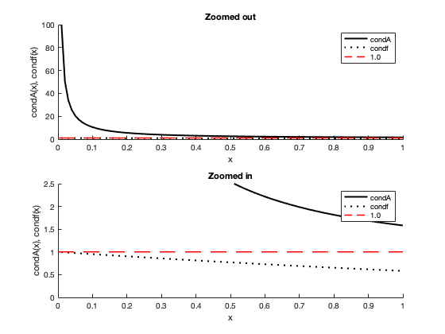
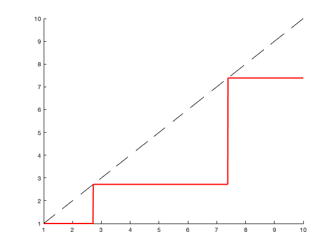
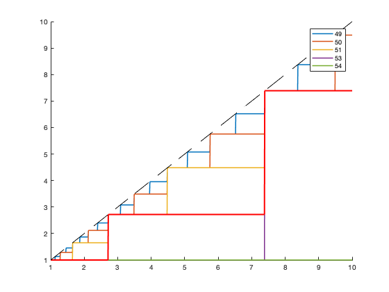

Contents
Problem 2
clear
clc
x = 5.5; k = 30; m = 5;
Nums_a = zeros(31,1); Nums_a(1) = 1;
Denoms_a = zeros(31,1); Denoms_a(1) = 1;
for n = 1:k
Nums_a(n+1) = round(Nums_a(n)*x,m,'significant');
Denoms_a(n+1) = round(Denoms_a(n)*n,m,'significant');
end
Approx_b = 0;
for n = 1:k+1
Approx_b = round(Approx_b + round(Nums_a(n)/Denoms_a(n),m,'significant'),m,'significant');
end
Approx_b
Exact = exp(x);
RE = (exp(x)-Approx_b)/exp(x)
Approx_c = 0;
for n = 1:k+1
Approx_c = round(round(Nums_a(n)/Denoms_a(n),m,'significant')+Approx_c,m,'significant');
end
Approx_c
x_d = -5.5;
for n = 1:k+1
Nums_d(n) = (-1)^(n-1)*Nums_a(n);
Denoms_d(n) = Denoms_a(n);
end
Terms = round(Nums_d./Denoms_d,m,'significant');
Approx_di = 0;
for n = 1:k+1
Approx_di = round(Approx_di + Terms(n),m,'significant');
end
Approx_di
Exact_d = exp(x_d);
RE_di = (exp(x_d)-Approx_di)/exp(x_d)
Approx_dii = 0;
for n = 1:k+1
Approx_dii = round(Terms(n)+Approx_dii,m,'significant');
end
Approx_dii
RE_dii = (exp(x_d)-Approx_dii)/exp(x_d)
Terms_pos = Terms; Terms_pos(Terms_pos < 0) = 0;
Terms_neg = Terms; Terms_neg(Terms_neg > 0) = 0;
Approx_diii = 0;
for n = 1:k+1
pos = 0; neg = 0;
for n2 = 1:n
pos = round(pos + Terms_pos(n2),m,'significant');
neg = round(neg + Terms_neg(n2),m,'significant');
end
Approx_diii = round(pos+neg,m,'significant');
end
Approx_diii
RE_diii = (exp(x_d)-Approx_diii)/exp(x_d)
Approx_div = 0;
for n = 1:k+1
pos = 0; neg = 0;
for n2 = 1:n
pos = round(Terms_pos(n2)+pos,m,'significant');
neg = round(Terms_neg(n2)+neg,m,'significant');
end
Approx_div = round(pos+neg,m,'significant');
end
Approx_div
RE_diii = (exp(x_d)-Approx_div)/exp(x_d)
Approx_e = 1/Approx_b
RE_e = (exp(x_d)-Approx_e)/exp(x_d)
Approx_b =
2.447100000000000e+02
RE =
-7.383870654188337e-05
Approx_c =
2.447100000000000e+02
Approx_di =
0.003836300000000
RE_di =
0.061288340254771
Approx_dii =
0.003836300000000
RE_dii =
0.061288340254771
Approx_diii =
0
RE_diii =
1
Approx_div =
0
RE_diii =
1
Approx_e =
0.004086469698827
RE_e =
7.383325478967511e-05
Problem 4
x = 0:0.01:1;
condA = (x./abs(1-exp(-x)))./x;
condf = (x.*exp(-x))./(1-exp(-x));
figure
subplot(2,1,1)
hold on
plot(x,condA,'k','LineWidth',2)
plot(x,condf,'k:','LineWidth',2')
plot(x,ones(size(x)),'r--','LineWidth',1.5)
hold off
title('Zoomed out')
xlabel('x')
ylabel('condA(x), condf(x)')
legend('condA','condf','1.0')
axis([0 1 0 100])
subplot(2,1,2)
hold on
plot(x,condA,'k','LineWidth',2)
plot(x,condf,'k:','LineWidth',2')
plot(x,ones(size(x)),'r--','LineWidth',1.5)
hold off
title('Zoomed in')
xlabel('x')
ylabel('condA(x), condf(x)')
legend('condA','condf','1.0')
axis([0 1 0 2.5])

Problem 5
clear
clc
dif = 1;
e_old = 0;
e_table = [];
j = 0;
TOL = 13;
while dif >0
n = 10^j;
e = (1+(1/n))^n;
dif = round(e,TOL,'significant')-round(e_old,TOL,'significant');
e_old = e;
e_table(j+1) = e;
j = j+1;
end
e
nstop = n
jstop = j-1
e_table'
e =
2.716110034086901
nstop =
1.000000000000000e+13
jstop =
13
ans =
2.000000000000000
2.593742460100002
2.704813829421528
2.716923932235594
2.718145926824926
2.718268237192297
2.718280469095753
2.718281694132082
2.718281798347358
2.718282052011560
2.718282053234788
2.718282053357110
2.718523496037238
2.716110034086901
Problem 6
clear
clc
x = linspace(1,10,1001);
x0 = x';
n = 52;
for j = 1:n
x = sqrt(x);
j = j;
end
x1 = x';
for k = 1:n
x = x.^2;
k = k;
end
x2 = x';
figure
hold on
plot(x0,x2,'r','LineWidth',2)
plot(x0,x0,'k--')
vals = [49 50 51 53 54];
y = zeros(1001,length(vals));
for j = 1:length(vals)
n = vals(j);
y1 = x0;
for k2 = 1:n
y1 = sqrt(y1);
k2 = k2;
end
y(:,j) = y1;
y2 = y1;
for k = 1:n
y2 = y2.^2;
k = k;
end
y(:,j) = y2;
end
figure
hold on
plot(x0,y,'LineWidth',1.5)
plot(x0,x2,'r','LineWidth',2)
plot(x0,x0,'k--')
legend('49','50','51','53','54')
 
Problem 7
clear
clc
syms X
func = 1;
for k = 1:20
func = (X-k)*func;
end
C = coeffs(func);
x0 = 21;
options = optimset('TolX',10^(-12));
x_b = fsolve(@(x) Wilkinson2(x, 0,0), x0,options)
delta = [10^(-8) 10^(-6) 10^(-4) 10^(-2)];
for j = 1:length(delta)
x_c = fsolve(@(x) Wilkinson2(x, delta(j),0), x0,options)
end
x_d = fsolve(@(x) Wilkinson2(x, 0, -2*10^(-23)), x0,options)
x_d = fsolve(@(x) Wilkinson2(x, 0, -2*10^(-23)),16,options)
x_d = fsolve(@(x) Wilkinson2(x, 0, -2*10^(-23)),17,options)
r = [14 16 17 20];
for j = 1:length(r)
dpdr = Wilkinson_deriv(r(j));
for l = 1:x0-1
cond = C(l)*r(j)^(l-1)/dpdr;
end
cond_e = double(cond)
end
No solution found.
fsolve stopped because the relative size of the current step is less than the
selected value of the step size tolerance squared, but the vector of function values
is not near zero as measured by the default value of the function tolerance.
x_b =
21.000000684404917
No solution found.
fsolve stopped because the relative size of the current step is less than the
selected value of the step size tolerance squared, but the vector of function values
is not near zero as measured by the default value of the function tolerance.
x_c =
20.999998425083085
No solution found.
fsolve stopped because the relative size of the current step is less than the
selected value of the step size tolerance squared, but the vector of function values
is not near zero as measured by the default value of the function tolerance.
x_c =
13.723795428123704
No solution found.
fsolve stopped because the relative size of the current step is less than the
selected value of the step size tolerance squared, but the vector of function values
is not near zero as measured by the default value of the function tolerance.
x_c =
7.708815299281727
No solution found.
fsolve stopped because the relative size of the current step is less than the
selected value of the step size tolerance squared, but the vector of function values
is not near zero as measured by the default value of the function tolerance.
x_c =
5.447006272762118
No solution found.
fsolve stopped because the relative size of the current step is less than the
selected value of the step size tolerance squared, but the vector of function values
is not near zero as measured by the default value of the function tolerance.
x_d =
21.000000684404917
Equation solved at initial point.
fsolve completed because the vector of function values at the initial point
is near zero as measured by the default value of the function tolerance, and
the problem appears regular as measured by the gradient.
x_d =
16
No solution found.
fsolve stopped because the relative size of the current step is less than the
selected value of the step size tolerance squared, but the vector of function values
is not near zero as measured by the default value of the function tolerance.
x_d =
17.000000235541705
cond_e =
-2.812153426564386e+11
cond_e =
-5.063540391073684e+11
cond_e =
3.999986896413966e+11
cond_e =
-9.051200152094036e+09
Problem 8
clear
clc
N = 32;
yn=0;
for n = 1:12
yn=(exp(1)-yn)/(N);
N = N-1;
end
y20=yn
y20 =
0.123803830762570